The most common chemical transformation of a carbon-carbon double bond is the addition reaction. A large number of reagents, both inorganic and organic, have been found to add to this functional group, and in this section we shall review many of these reactions. A majority of these reactions are exothermic, due to the fact that the C-C pi-bond is relatively weak (ca. 63 kcal/mole) relative to the sigma-bonds formed to the atoms or groups of the reagent. Remember, the bond energies of a molecule are the energies required to break (homolytically) all the covalent bonds in the molecule. Consequently, if the bond energies of the product molecules are greater than the bond energies of the reactants, the reaction will be exothermic. The following calculations for the addition of H-Br are typical. Note that by convention exothermic reactions have a negative heat of reaction.
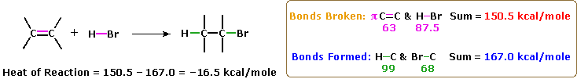
As illustrated by the preceding general equation, strong Brønsted acids such as HCl, HBr, HI & H2SO4, rapidly add to the C=C functional group of alkenes to give products in which new covalent bonds are formed to hydrogen and to the conjugate base of the acid. Using the above equation as a guide, write the addition products expected on reacting each of these reagents with cyclohexene.
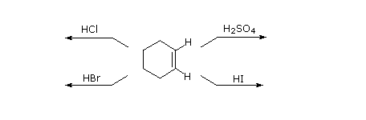
Weak Brønsted acids such as water (pKa = 15.7) and acetic acid (pKa = 4.75) do not normally add to alkenes. However, the addition of a strong acid serves to catalyze the addition of water, and in this way alcohols may be prepared from alkenes. For example, if sulfuric acid is dissolved in water it is completely ionized to the hydronium ion, H3O(+), and this strongly acidic (pKa = -1.74) species effects hydration of ethene and other alkenes.
CH2=CH2 + H3O(+) ——> HCH2–CH2OH + H(+)
The importance of choosing an appropriate solvent for these addition reactions should now be clear. If the addition of HCl, HBr or HI is desired, water and alcohols should not be used. These strong acids will ionize in such solvents to give ROH2(+) and the nucleophilic oxygen of the solvent will compete with the halide anions in the final step, giving alcohol and ether products. By using inert solvents such as hexane, benzene and methylene chloride, these competing solvent additions are avoided. Because these additions proceed by way of polar or ionic intermediates, the rate of reaction is greater in polar solvents, such as nitromethane and acetonitrile, than in non-polar solvents, such as cyclohexane and carbon tetrachloride.
Only one product is possible from the addition of these strong acids to symmetrical alkenes such as ethene and cyclohexene. However, if the double bond carbon atoms are not structurally equivalent, as in molecules of 1-butene, 2-methyl-2-butene and 1-methylcyclohexene, the reagent conceivably may add in two different ways. This is shown for 2-methyl-2-butene in the following equation.
When addition reactions to such unsymmetrical alkenes are carried out, we find that one of the two possible constitutionally isomeric products is formed preferentially. Selectivity of this sort is termed regioselectivity. In the above example, 2-chloro-2-methylbutane is nearly the exclusive product. Similarly, 1-butene forms 2-bromobutane as the predominant product on treatment with HBr.
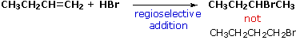
After studying many addition reactions of this kind, the Russian chemist Vladimir Markovnikov noticed a trend in the structure of the favored addition product. He formulated this trend as an empirical rule we now call The Markovnikov Rule: When a Brønsted acid, HX, adds to an unsymmetrically substituted double bond, the acidic hydrogen of the acid bonds to that carbon of the double bond that has the greater number of hydrogen atoms already attached to it. In more homelier vernacular this rule may be restated as, "Them that has gits."
It is a helpful exercise to predict the favored product in examples such as those shown below:
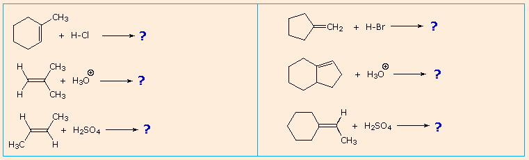
Empirical rules like the Markovnikov Rule are useful aids for remembering and predicting experimental results. Indeed, empirical rules are often the first step toward practical mastery of a subject, but they seldom constitute true understanding. The Markovnikov Rule, for example, suggests there are common and important principles at work in these addition reactions, but it does not tell us what they are. The next step in achieving an understanding of this reaction must be to construct a rational mechanistic model that can be tested by experiment.
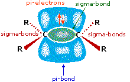
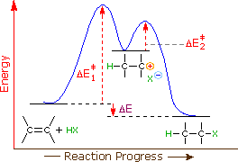
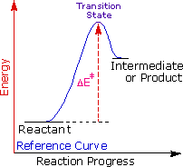
Energy
higher begin lower
George Hammond formulated a useful principle that relates the nature of a transition state to its location on the reaction path. This Hammond Postulate states that a transition state will be structurally and energetically similar to the species (reactant, intermediate or product) nearest to it on the reaction path. In strongly exothermic reactions the transition state will resemble the reactant species. In strongly endothermic conversions, such as that shown to the right, the transition state will resemble the high-energy intermediate or product, and will track the energy of this intermediate if it changes. This change in transition state energy and activation energy as the stability of the intermediate changes may be observed by clicking the higher or lower buttons to the right of the energy diagram. Three examples may be examined, and the reference curve is changed to gray in the diagrams for higher (magenta) and lower (green) energy intermediates.
The carbocation intermediate formed in the first step of the addition reaction now assumes a key role, in that it directly influences the activation energy for this step. Independent research shows that the stability of carbocations varies with the nature of substituents, in a manner similar to that seen for alkyl radicals. The exceptional stability of allyl and benzyl cations is the result of charge delocalization, and the stabilizing influence of alkyl substituents, although less pronounced, has been interpreted in a similar fashion.
From this information, applying the Hammond Postulate, we arrive at a plausible rationalization of Markovnikov's rule. When an unsymmetrically substituted double bond is protonated, we expect the more stable carbocation intermediate to be formed faster than the less stable alternative, because the activation energy of the path to the former is the lower of the two possibilities. This is illustrated by the following equation for the addition of hydrogen chloride to propene. Note that the initial acid-base equilibrium leads to a pi-complex which immediately reorganizes to a sigma-bonded carbocation intermediate. The more stable 2º-carbocation is formed preferentially, and the conjugate base of the Brønsted acid (chloride anion in the example shown below) then rapidly bonds to this electrophilic intermediate to form the final product.
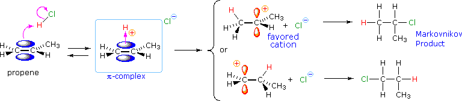
The following energy diagram summarizes these features. Note that the pi-complex is not shown, since this rapidly and reversibly formed species is common to both possible reaction paths.
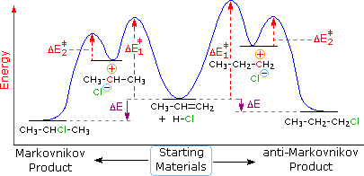
A more extensive discussion of the factors that influence carbocation stability may be accessed by Clicking Here.
The formation of carbocations is sometimes accompanied by a structural rearrangement. Such rearrangements take place by a shift of a neighboring alkyl group or hydrogen, and are favored when the rearranged carbocation is more stable than the initial cation. The addition of HCl to 3,3-dimethyl-1-butene, for example, leads to an unexpected product, 2-chloro-2,3-dimethylbutane, in somewhat greater yield than 3-chloro-2,2-dimethylbutane, the expected Markovnikov product. This surprising result may be explained by a carbocation rearrangement of the initially formed 2º-carbocation to a 3º-carbocation by a 1,2-shift of a methyl group. To see this rearrangement click the "Show Mechanism" button to the right of the equation.
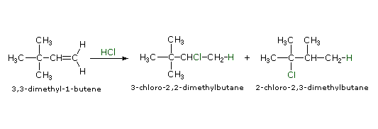
Another factor that may induce rearrangement of carbocation intermediates is strain. The addition of HCl to α-pinene, the major hydrocarbon component of turpentine, gives the rearranged product, bornyl chloride, in high yield. As shown in the following equation, this rearrangement converts a 3º-carbocation to a 2º-carbocation, a transformation that is normally unfavorable. However, the rearrangement also expands a strained four-membered ring to a much less-strained five-membered ring, and this relief of strain provides a driving force for the rearrangement. A three-dimensional projection view of the rearrangement may be seen by clicking the "Other View" button. The atom numbers (colored red) for the pinene structure are retained throughout the rearrangement to help orient the viewer. The green numbers in the final product represent the proper numbering of this bicyclic ring system.
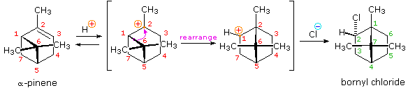
The propensity for structural rearrangement shown by certain molecular constitutions, as illustrated above, serves as a useful probe for the intermediacy of carbocations in a reaction. We shall use this test later.
An extensive and more detailed discussion of cation induced rearrangements may be accessed by Clicking Here.
The proton is not the only electrophilic species that initiates addition reactions to the double bond. Lewis acids like the halogens, boron hydrides and certain transition metal ions are able to bond to the alkene pi-electrons, and the resulting complexes rearrange or are attacked by nucleophiles to give addition products. The electrophilic character of the halogens is well known. Although fluorine is uncontrollably reactive, chlorine, bromine and to a lesser degree iodine react selectively with the double bond of alkenes. The addition of chlorine and bromine to alkenes, as shown in the following general equation, proceeds by an initial electrophilic attack on the pi-electrons of the double bond. Iodine adds reversibly to double bonds, but the equilibrium does not normally favor the addition product, so it is not a useful preparative method. Dihalo-compounds in which the halogens are juxtaposed in the manner shown are called vicinal, from the Latin vicinalis, meaning neighboring.
Other halogen containing reagents which add to double bonds include hypohalous acids, HOX, and sulfenyl chlorides, RSCl. These reagents are unsymmetrical, so their addition to unsymmetrical double bonds may in principle take place in two ways. In practice, these addition reactions are regioselective, with one of the two possible constitutionally isomeric products being favored. The electrophilic moiety of these reagents is the halogen.
(CH3)2C=CH2 + HOBr ——> (CH3)2COH-CH2Br (CH3)2C=CH2 + C6H5SCl ——> (CH3)2CCl-CH2SC6H5
The regioselectivity of the above reactions may be explained by the same mechanism we used to rationalize the Markovnikov rule. Thus, bonding of an electrophilic species to the double bond of an alkene should result in preferential formation of the more stable (more highly substituted) carbocation, and this intermediate should then combine rapidly with a nucleophilic species to produce the addition product. This is illustrated by the following equation.
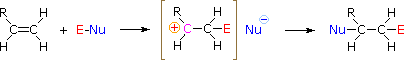
To apply this mechanism we need to determine the electrophilic moiety in each of the reagents.
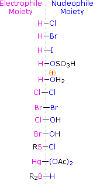
If you understand this mechanism you should be able to write products for the following reactions:
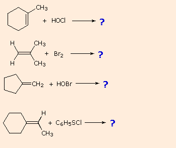
The addition products formed in reactions of alkenes with mercuric acetate and boron hydrides (compounds shown at the bottom of of the reagent list) are normally not isolated, but instead are converted to alcohols by a substitution reaction. These important synthetic transformations are illustrated for 2-methylpropene by the following equations, in which the electrophilic moiety is colored red and the nucleophile blue. The top reaction sequence illustrates the oxymercuration procedure and the bottom is an example of hydroboration.
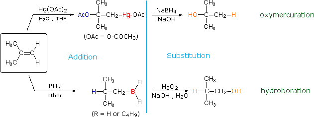
The light blue vertical line separates the addition reaction on the left from the substitution on the right. The atoms or groups that have been added to the original double bond are colored orange in the final product. In both cases the overall reaction is the addition of water to the double bond, but the regioselectivity is reversed. The oxymercuration reaction gives the product predicted by Markovnikov's rule; hydroboration on the other hand gives the "anti-Markovnikov" product. Complementary reactions such as these are important because they allow us to direct a molecular transformation whichever way is desired. Mercury and boron are removed from the organic substrate in the second step of oxymercuration and hydroboration respectively. These reactions are seldom discussed in detail; however, it is worth noting that the mercury moiety is reduced to metallic mercury by borohydride (probably by way of radical intermediates), and boron is oxidized to borate by the alkaline peroxide. Addition of hydroperoxide anion to the electrophilic borane generates a tetra-coordinate boron peroxide, having the general formula R3B-O-OH(-). This undergoes successive intramolecular shifts of alkyl groups from boron to oxygen, accompanied in each event by additional peroxide addition to electron deficient boron. The retention of configuration of the migrating alkyl group is attributed to the intramolecular nature of the rearrangement. Since the oxymercuration sequence gives the same hydration product as acid-catalyzed addition of water (see Brønsted acid addition), we might question why this two-step procedure is used at all. The reason lies in the milder reaction conditions used for oxymercuration. The strong acid used for direct hydration may not be tolerated by other functional groups, and in some cases may cause molecular rearrangement (see above).
The addition of borane, BH3, requires additional comment. In pure form this reagent is a dimeric gas B2H6, called diborane, but in ether or THF solution it is dissociated into a solvent coordinated monomer, R2O-BH3. Although diborane itself does not react easily with alkene double bonds, H.C. Brown (Purdue, Nobel Prize 1979) discovered that the solvated monomer adds rapidly under mild conditions. Boron and hydrogen have rather similar electronegativities, with hydrogen being slightly greater, so it is not likely there is significant dipolar character to the B-H bond. Since boron is electron deficient (it does not have a valence shell electron octet) the reagent itself is a Lewis acid and can bond to the pi-electrons of a double bond by displacement of the ether moiety from the solvated monomer. As shown in the following equation, this bonding might generate a dipolar intermediate consisting of a negatively-charged boron and a carbocation. Such a species would not be stable and would rearrange to a neutral product by the shift of a hydride to the carbocation center. Indeed, this hydride shift is believed to occur concurrently with the initial bonding to boron, as shown by the transition state drawn below the equation, so the discrete intermediate shown in the equation is not actually formed. Nevertheless, the carbocation stability rule cited above remains a useful way to predict the products from hydroboration reactions. You may correct the top equation by clicking the button on its right. Note that this addition is unique among those we have discussed, in that it is a single-step process. Also, all three hydrogens in borane are potentially reactive, so that the alkyl borane product from the first addition may serve as the hydroboration reagent for two additional alkene molecules.
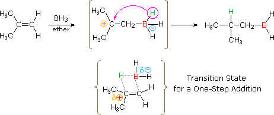
To examine models of B2H6. and its dissociation in THF
As illustrated in the drawing on the right, the pi-bond fixes the carbon-carbon double bond in a planar configuration, and does not permit free rotation about the double bond itself. We see then that addition reactions to this function might occur in three different ways, depending on the relative orientation of the atoms or groups that add to the carbons of the double bond: (i) they may bond from the same side, (ii) they may bond from opposite sides, or (iii) they may bond randomly from both sides. The first two possibilities are examples of stereoselectivity, the first being termed syn-addition, and the second anti-addition. Since initial electrophilic attack on the double bond may occur equally well from either side, it is in the second step (or stage) of the reaction (bonding of the nucleophile) that stereoselectivity may be imposed. If the two-step mechanism described above is correct, and if the carbocation intermediate is sufficiently long-lived to freely-rotate about the sigma-bond component of the original double bond, we would expect to find random or non-stereoselective addition in the products. On the other hand, if the intermediate is short-lived and factors such as steric hindrance or neighboring group interactions favor one side in the second step, then stereoselectivity in product formation is likely. The following table summarizes the results obtained from many studies, the formula HX refers to all the strong Brønsted acids. The interesting differences in stereoselectivity noted here provide further insight into the mechanisms of these addition reactions.
The stereoselectivity of Brønsted acid addition is sensitive to experimental conditions such as temperature and reagent concentration. The selectivity is often anti, but reports of syn selectivity and non-selectivity are not uncommon. Of all the reagents discussed here, these strong acid additions (E = H in the following equation) come closest to proceeding by the proposed two-step mechanism in which a discrete carbocation intermediate is generated in the first step. Such reactions are most prone to rearrangement when this is favored by the alkene structure.
The halogens chlorine and bromine add rapidly to a wide variety of alkenes without inducing the kinds of structural rearrangements noted for strong acids (first example below). The stereoselectivity of these additions is strongly anti, as shown in many of the following examples.
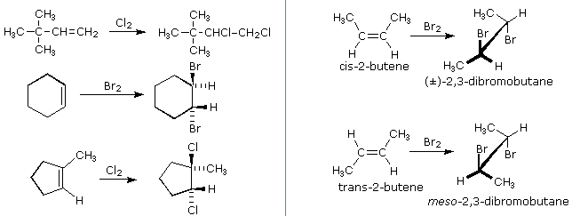
An important principle should be restated at this time. The alkenes shown here are all achiral, but the addition products have chiral centers, and in many cases may exist as enantiomeric stereoisomers. In the absence of chiral catalysts or reagents, reactions of this kind will always give racemic mixtures if the products are enantiomeric. On the other hand, if two chiral centers are formed in the addition the reaction will be diastereomer selective. This is clearly shown by the addition of bromine to the isomeric 2-butenes. Anti-addition to cis-2-butene gives the racemic product, whereas anti-addition to the trans-isomer gives the meso-diastereomer. We can account both for the high stereoselectivity and the lack of rearrangement in these reactions by proposing a stabilizing interaction between the developing carbocation center and the electron rich halogen atom on the adjacent carbon. This interaction, which is depicted for bromine in the following equation, delocalizes the positive charge on the intermediate and blocks halide ion attack from the syn-location.
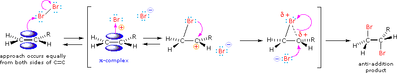
The stabilization provided by this halogen-carbocation bonding makes rearrangement unlikely, and in a few cases three-membered cyclic halonium cations have been isolated and identified as true intermediates. A resonance description of such a bromonium ion intermediate is shown below. The positive charge is delocalized over all the atoms of the ring, but should be concentrated at the more substituted carbon (carbocation stability), and this is the site to which the nucleophile will bond.
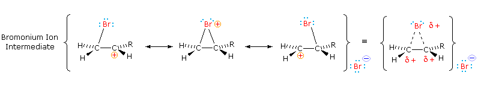
The stereoselectivity described here is in large part due to a stereoelectronic effect. This aspect of addition reactions may be explored by clicking here.
Because they proceed by way of polar ion-pair intermediates, chlorine and bromine addition reactions are faster in polar solvents than in non-polar solvents, such as hexane or carbon tetrachloride. However, in order to prevent solvent nucleophiles from competing with the halide anion, these non-polar solvents are often selected for these reactions. In water or alcohol solution the nucleophilic solvent may open the bromonium ion intermediate to give an α-halo-alcohol or ether, together with the expected vic-dihalide. Such reactions are sensitive to pH and other factors, so when these products are desired it is necessary to modify the addition reagent. Aqueous chlorine exists as the following equilibrium, Keq ≈ 10-4. By adding AgOH, the concentration of HOCl can be greatly increased, and the chlorohydrin addition product obtained from alkenes.
The more widely used HOBr reagent, hypobromous acid, is commonly made by hydrolysis of N-bromoacetamide, as shown below. Both HOCl and HOBr additions occur in an anti fashion, and with the regioselectivity predicted by this mechanism (OH bonds to the more substituted carbon of the alkene).
Vicinal halohydrins provide an alternative route for the epoxidation of alkenes over that of reaction with peracids. As illustrated in the following diagram, a base induced intramolecular substitution reaction forms a three-membered cyclic ether called an epoxide. Both the halohydrin formation and halide displacement reactions are stereospecific, so stereoisomerism in the alkene will be reflected in the epoxide product (i.e. trans-2-butene forms a trans-disubstituted epoxide). A general procedure for forming these useful compounds will be discussed in the next section.
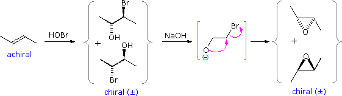
Other Addition ReactionsOxidative Cleavage & Diene Chemistry
This page is the property of The Edvibe Team. Comments, questions and errors should be sent to contact@edvibe.co.ke. These pages are provided to the IOCD to assist in capacity building in chemical education. 05/05/2013